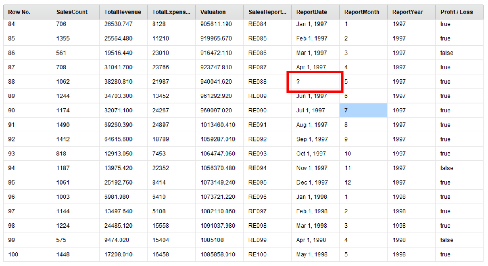
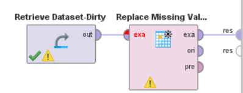
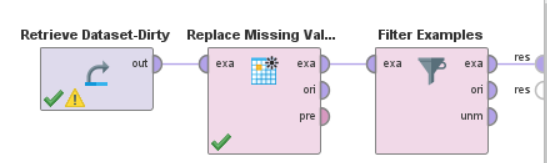
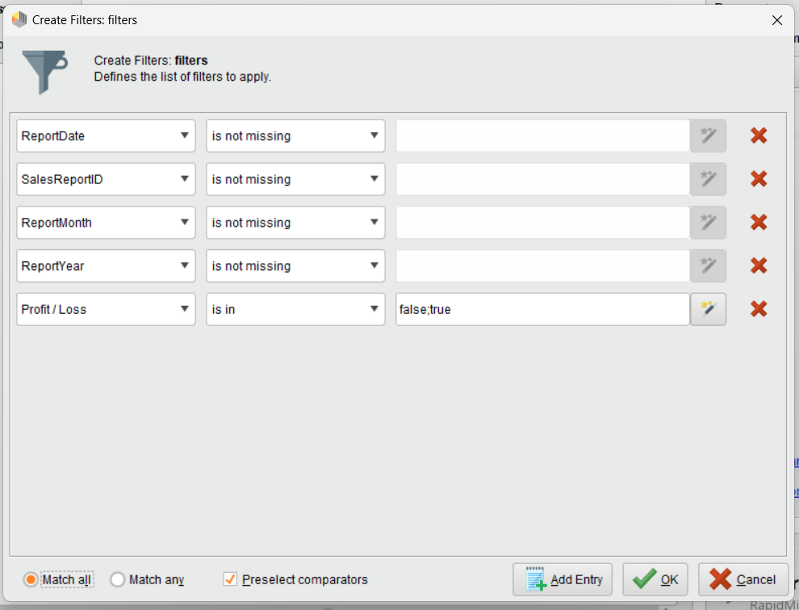

Missing Values Handling
Note
Untuk data processing ini, kita akan menggunakan Dataset-Dirty. Pastikan anda telah mengimport dataset tersebut ke dalam Rapid Miner sebelum memulai tutorial ini.
Replace Missing Values
{kind=link}
Perhatikan gambar di atas. Di sini kita bisa melihat bahwa terdapat beberapa kolom yang memiliki nilai kosong (?). Dalam melakukan data analysis, kita tidak bisa menggunakan data yang tidak lengkap. Oleh karena itu, kita memiliki 2 cara:
Mengisi nilai kosong dengan nilai yang sesuai
Menghapus baris yang memiliki nilai kosong
Untuk sekarang, kita akan membahas cara pertama. Di panel Operators, cari oerator “Replace Missing Values”, lalu tarik ke dalam panel Process.
Kemudian, hubungkan Dataset kita ke dalam operator tersebut. Lalu hubungkan operator tersebut ke dalam node “res”.
{kind=link}
Setelah itu, kita akan mengatur parameter dari operator tersebut. Pilih node “Replace Missing Values”, lalu perhatikan panel Parameters. Di sini, kita akan mengatur nilai yang akan menggantikan nilai kosong tersebut. Di “attribute filter type”, kita dapat memilih attribute apa yang akan kita ubah.
Dari sini, perhatikan data apa yang ingin kita ubah. Sebagai contoh, kita akan mengubah nilai kosong di kolom “SalesCount”, “TotalRevenue”, “TotalExpenses”, dan “Valuation”. Pastikan kita memilih mode subset di “attribute filter type”. Kemudian, pilih “Select Attributes”
Pilih attribute yang diinginkan dengan double click attribute tersebut atau menggunakan panah ➡️. Setelah itu, pilih tombol “Apply”.

Kemudian, kita bisa memilih default value data yang kosong itu. Kita bisa menggunakan mode “average” untuk demonstrasi ini. Setelah itu, klik tombol “Run” untuk menjalankan proses ini.
Remove Missing Values (Filter Examples)
Jika kita perhatikan data di atas, kita bisa melihat masih ada beberapa data yang kosong. Untuk data ini, kita akan filter lagi menggunakan Filter Examples. Di panel Operators, cari operator “Filter Examples”, lalu tarik ke dalam panel Process.
Jangan lupa hubungkan node tersebut ke dalam proses yang sudah kita buat sebelumnnya. Lalu hubungkan operator tersebut ke dalam node “res”.
{kind=link}
Tujuan dari Filter Examples ini adalah untuk melakukan filtering oleh data kita. Di panel Parameters, kita bisa mengatur filter yang kita inginkan dengan klik “Add Filters”
Gunakan konfigurasi berdasarkan gambar di bawah ini sebagai contoh. Tujuannya adalah untuk memastikan bahwa tidak ada data yang kosong di kolom “ReportDate”, “SalesReportID”, “ReportMonth”, dan “ReportYear”. Kita juga ingin memastikan di kolom “Profit / Loss” hanya memiliki value true dan false.
{kind=link}
Setelah itu, klik tombol “Run” untuk menjalankan proses ini.